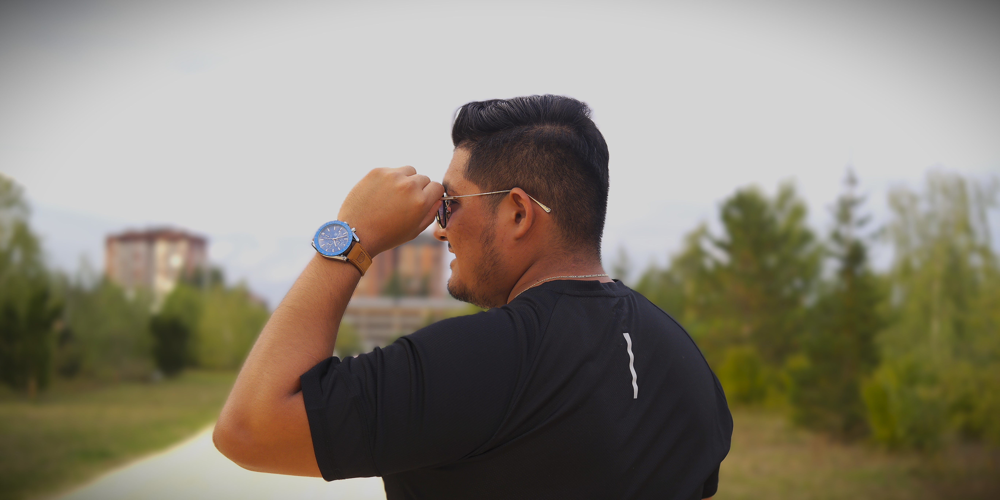
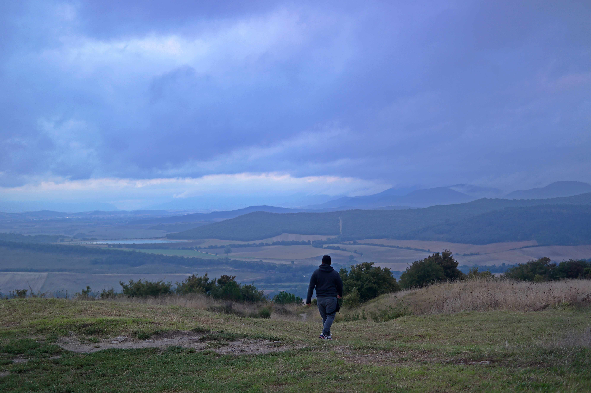

blogs
bienvenido a mi blogs aqui encontraras toda la información relacionada con mi trabajo
bienvenido a mi blogs aqui encontraras toda la información relacionada con mi trabajo
En 2018 comencé a aprender programación. Recuerdo mirar a otros entender rápido lo que a mí me costaba horas. Me sentí inútil, fuera de lugar… y en 2019 lo dejé. Pero algo en mí no quería rendirse. En 2020 lo retomé, aún con dudas, aún sintiéndome lento. A duras penas logré graduarme del bachillerato y en 2021 trabajé en construcción. Ese trabajo me hizo comprender que no era el camino que queria seguir.
En 2022 comencé la carrera de Ingeniería en Sistemas. Estudié Programación Orientada a Objetos y bases de datos. Por primera vez sentí que estaba en el camino correcto. Pero en 2023, por motivos económicos, tuve que pausar todo nuevamente.
Y no ha sido sino hasta este 2025 que he vuelto a retomar el rumbo. Este año ha sido un sube y baja de emociones, pero también un punto de inflexión muy importante en mi vida. Cabe destacar que nada de esto hubiera sido posible sin la guía de mi maestro, Iker Álvarez. Él inyectó en mí eso que me faltaba: pasión. Me enseñó que sí, es difícil, pero que vale la pena. Me mostró un método de estudio que realmente funciona, y poco a poco me ayudó a cogerle cariño al aprendizaje. No sé cómo explicarlo del todo, pero su motivación me empujó a seguir, a querer saber más, a no rendirme.
En la vida, a veces nos encontramos con una persona que, con cariño y actitud, nos muestra cómo mejorar y cómo amar eso que alguna vez pensamos imposible. Puede sonar insignificante para algunos… pero para mí, hizo una gran diferencia. muchas Gracias Iker. "finge hasta que lo sientas" nunca se me olvira esa frase.
Aprender a programar no es fácil. No soy un experto, pero he comprendido que esta carrera es una de constante aprendizaje. No se trata de llegar rápido, sino de no detenerse. A veces me pregunto si entendí esto muy tarde… pero la verdad es que ha valido la pena cada paso, cada caída, cada regreso. Ya han pasado cinco años desde aquel primer intento. Hoy empiezo este blog como un nuevo punto de partida. No empecé tarde, simplemente me detuve… cuando el mundo siguió. Pero aquí estoy, otra vez. Este blog es para ti, que estás comenzando, que tal vez sientes que vas lento, que no entiendes nada. Quiero que sepas que lo difícil no es imposible. Acompáñame en este viaje. Vamos a crecer juntos. de cero hasta full stack.


